Фотогалерея
Про галерею
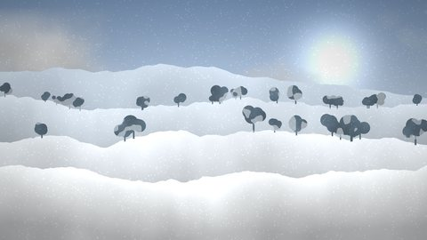
Рік у дванадцяти пейзажах: від першого снігу до Святвечора. Зображення намальовано алгоритмічно в Full HD 1920×1080, мініатюри — 480×270 пікселів.Натисніть мініатюру — зображення відкриється у збільшеному вигляді (лайтбокс), гортайте стрілками ← → або клавіатурою. Посилання «Повний розмір» веде на окрему сторінку перегляду з кнопками «Назад» і «Вперед».
Мініатюри
| 01Перший сніг на пагорбах | 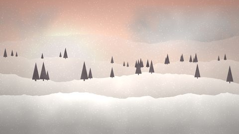 02Морозний ранок у сосновому бору |
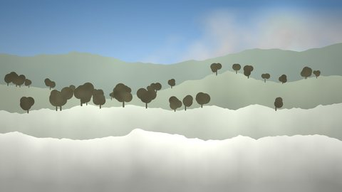 03Березень: тане сніг, біжать струмки |
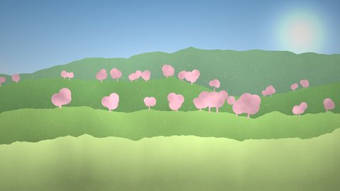 04Цвітуть вишні над ставом |
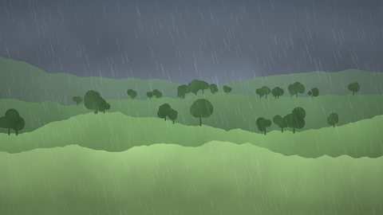 05Травнева злива над полем |
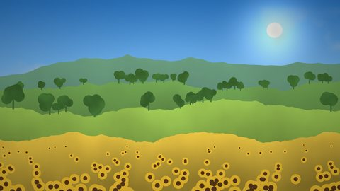 06Соняшники в липневу спеку |
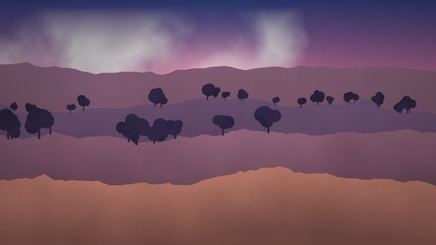 07Літній вечір над Дніпром |
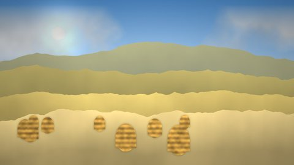 08Копиці сіна після жнив |
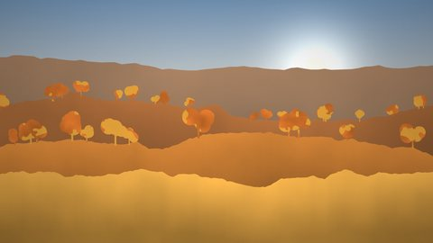 09Золота осінь у буковому лісі |
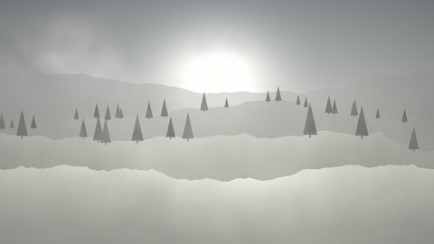 10Листопадовий туман |
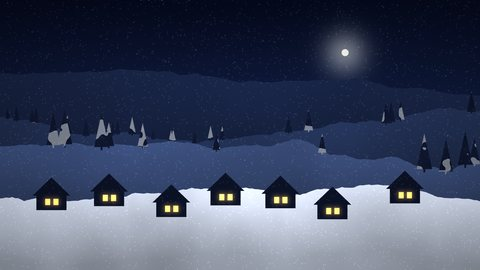 11Святвечір: зоря над селом |
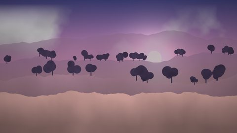 12Весняне рівнодення на світанку |
Формат: JPEG, 1920×1080 (Full HD), до 400 КБ кожен файл; мініатюри 480×270. Усі зображення — власна процедурна графіка.